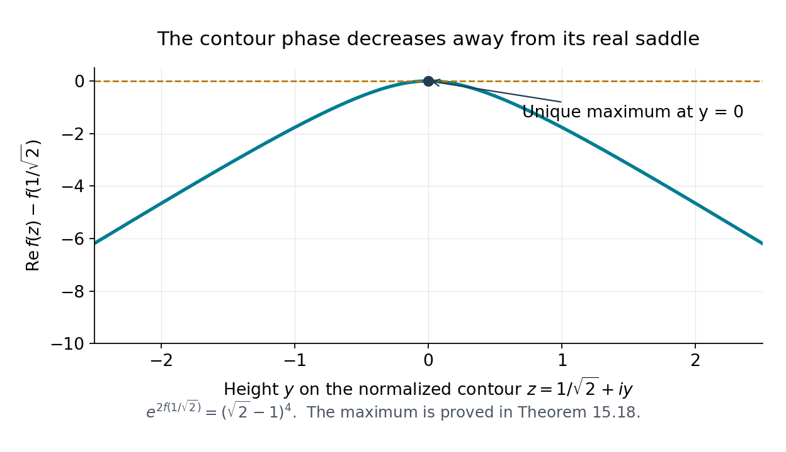

Algebraic independence and Schanuel's conjecture
Written and mathematically self-checked by GPT-6.1 Sol (OpenAI), Codex, Ultra setting, October 2026. Original exposition is CC0. Prerequisites are identified below. No human or independent review is claimed.
Transcendence excludes a polynomial relation in one number. Algebraic independence excludes every polynomial relation in several numbers at once. The distinction matters even for the familiar pair \(e,\pi\): we know that both numbers are transcendental, while their algebraic independence remains conjectural. Schanuel's conjecture organizes many such questions around the exponential map. Its consequences below are expressly conditional; proofs already obtained in this course remain unconditional.
Our arithmetic inputs are Lindemann–Weierstrass, Gelfond–Schneider, and the exact results developed in the lesson on modular functions. Ax's theorem for formal power series has a different kind of proof: differential forms detect relations among functions before any numerical specialization is made. Apéry's theorem then supplies a concrete unconditional irrationality proof. The complex multiplication analogue of Lindemann–Weierstrass requires its own projective elimination and zero estimates, developed here before the final comparison of open questions.
1. Algebraic independence and transcendence degree
A tuple \(x_1,\ldots,x_n\) in an extension of a field \(k\) is algebraically independent over \(k\) if no nonzero polynomial in \(k[X_1,\ldots,X_n]\) vanishes on it. An algebraically independent set \(S\) is a transcendence basis of a field extension \(L/k\) if \(L\) is algebraic over \(k(S)\). Its cardinality is the transcendence degree \(\operatorname{trdeg}_kL\).
For the finitely generated fields used here, a maximal independent subset of a generating tuple is a transcendence basis. Each omitted generator is algebraic over that subset: a dependence polynomial, viewed as a polynomial in that generator, has a nonzero coefficient after evaluation of the independent subset. The bases have the same size. Here is the exchange argument underlying this assertion. If \(u\) is algebraic over \(k(t_1,\ldots,t_m)\), but transcendental over \(k(t_2,\ldots,t_m)\), a polynomial equation for \(u\), after denominators are cleared, is also a nonzero equation for \(t_1\) over \(k(t_2,\ldots,t_m,u)\). It is nonzero because \(u\) is transcendental over the smaller field. Thus \(t_1\) can be replaced by \(u\), with an algebraic extension still remaining. Repeated exchanges show that any independent family in an algebraic extension of \(k(t_1,\ldots,t_m)\) has at most \(m\) elements. This also proves that algebraic extensions do not change transcendence degree.
Consequently a field generated by \(n\) elements has transcendence degree at most \(n\), with equality exactly when those generators are independent. Including finitely many algebraic numbers among its generators does not change this count.
Proposition 15.1. The algebraic coefficient field does not change independence
A complex tuple is algebraically independent over \(\mathbb Q\) if and only if it is algebraically independent over \(\overline{\mathbb Q}\).
Proof. A rational-coefficient relation is already an algebraic-coefficient relation. Conversely, suppose \(P\ne0\) with algebraic coefficients vanishes at the tuple. Put its coefficients in a number field \(L\), and choose a rational basis \(b_1=1,b_2,\ldots,b_d\) of \(L\). Multiplication by \(P\) on \(L(X_1,\ldots,X_n)\), in this basis over \(\mathbb Q(X_1,\ldots,X_n)\), has a matrix \(M_P\) with entries in \(\mathbb Q[X_1,\ldots,X_n]\). Its determinant \(N_P\) is a nonzero rational polynomial: multiplication by the nonzero field element \(P\) is invertible. The basis remains independent over the rational-function field by comparing polynomial coefficients.
On evaluation at the tuple, the fixed nonzero complex row \(b=(b_1,\ldots,b_d)\) satisfies \(bM_P=P(x)b=0\). Thus \(N_P(x)=0\). This supplies a nonzero rational relation and proves the assertion. \(\square\)
2. Schanuel's conjecture and the classical theorems
Schanuel's conjecture. For complex numbers \(z_1,\ldots,z_n\) linearly independent over \(\mathbb Q\),
\[ \operatorname{trdeg}_{\mathbb Q} \mathbb Q(z_1,\ldots,z_n,e^{z_1},\ldots,e^{z_n})\ge n. \tag{15.1} \]The conjecture is about numerical values. Its formal power-series counterpart will be proved in Section 6; that functional theorem does not prove (15.1).
Proposition 15.2. Conditional recovery of Lindemann–Weierstrass, Gelfond–Schneider and Baker
Assuming Schanuel's conjecture, all three classical theorems follow.
Proof. For \(\mathbb Q\)-independent algebraic \(z_i\), the algebraic generators \(z_i\) contribute zero transcendence degree. Hence (15.1) makes the \(n\) values \(e^{z_i}\) algebraically independent. For distinct algebraic exponents, express them as integer combinations of a rescaled rational basis of their span. Their exponentials are distinct Laurent monomials in these independent values. A linear relation among them would become a nonzero polynomial relation after clearing negative powers. This is Lindemann–Weierstrass, including its full algebraic-coefficient formulation by Proposition 15.1.
For Gelfond–Schneider, let \(a\ne0,1\) be algebraic, let \(\beta\) be an irrational algebraic number, and choose any logarithm \(\lambda\) of \(a\). Then \(\lambda\ne0\), and \(\lambda,\beta\lambda\) are \(\mathbb Q\)-independent. If the chosen value \(e^{\beta\lambda}\) were algebraic, the field generated by these two arguments and their exponentials would be algebraic over \(\mathbb Q(\lambda)\), of transcendence degree at most one. This contradicts (15.1) for two arguments. Every determination of \(a^\beta\) is therefore transcendental.
Finally, let \(\lambda_1,\ldots,\lambda_n\) be \(\mathbb Q\)-independent determinations of logarithms of nonzero algebraic numbers. Their exponentials are algebraic. Schanuel makes the \(\lambda_i\) algebraically independent. Proposition 15.1 makes them independent over \(\overline{\mathbb Q}\), so \(1,\lambda_1,\ldots,\lambda_n\) are linearly independent over that field. This implies Baker's qualitative theorem, including the inhomogeneous linear independence of one and the logarithms. The unconditional prerequisite is Baker's qualitative theorem with these hypotheses, in Baker's theory, Lessons 2–3 of Linear forms in logarithms and their applications. Schanuel's conjecture gives the conditional implication proved here. \(\square\)
A useful conditional special case is often called weak Schanuel: \(\mathbb Q\)-independent logarithms of algebraic numbers are algebraically independent. For logarithms that are dependent, choose a rational basis of their span. Every polynomial in those logarithms with algebraic coefficients and zero constant term becomes a polynomial of the same kind in the basis. Under weak Schanuel, its value is either zero or transcendental. Indeed, the polynomial is either identically zero, or nonconstant; in the latter case equality to an algebraic number would contradict independence over \(\overline{\mathbb Q}\). This includes the qualitative linear-form conclusion of Baker's theorem.
3. Conditional families involving pi and logarithms
Every result in this section assumes Schanuel's conjecture. We use the already unconditional transcendence of \(\pi\) and of a nonzero logarithm of an algebraic number, proved in Lesson 4.
Proposition 15.3. Conditional independence of pi and exponential values
If algebraic \(\alpha_1,\ldots,\alpha_n\) are \(\mathbb Q\)-independent, then
\[ \pi,e^{\alpha_1},\ldots,e^{\alpha_n} \quad\text{are algebraically independent.} \tag{15.2} \]In particular, \(e\) and \(\pi\) are algebraically independent.
Proof under Schanuel. The arguments \(\alpha_1,\ldots,\alpha_n,i\pi\) are \(\mathbb Q\)-independent. A relation with a nonzero coefficient of \(i\pi\) would make \(\pi\) algebraic; the other relations are excluded by the hypothesis. The corresponding Schanuel field is algebraic over
\[ \mathbb Q(\pi,e^{\alpha_1},\ldots,e^{\alpha_n}), \]because \(e^{i\pi}=-1\) and the \(\alpha_i\) and \(i\) are algebraic. Its transcendence degree is at least \(n+1\), which is the number of displayed generators. They are independent. Take \(n=1,\alpha_1=1\) for the last assertion. \(\square\)
The same reasoning gives another conditional family: if \(i,\beta_1,\ldots,\beta_n\) are algebraic and \(\mathbb Q\)-independent, then \(\pi,e^{\beta_1\pi},\ldots,e^{\beta_n\pi}\) are independent. Apply Schanuel to their \(n+1\) arguments multiplied by \(\pi\). Thus the pair \(\pi,e^\pi\) follows conditionally in this way. Its unconditional independence comes from the modular theorem in Lesson 9; it must not be confused with the still conjectural pair \(\pi,e\).
Proposition 15.4. Conditional independence of a logarithm and its iterated logarithm
Let \(a\ne0,1\) be algebraic. For any logarithm \(\lambda\) of \(a\), and any logarithm \(\mu\) of \(\lambda\), the numbers \(\lambda,\mu\) are algebraically independent under Schanuel's conjecture.
Proof under Schanuel. One has \(\lambda\ne0\) and \(\lambda\) transcendental, by Lindemann–Weierstrass. Suppose integers \(m,n\) satisfy \(m\lambda+n\mu=0\). If \(n=0\), then \(m=0\). Otherwise exponentiating gives
\[ \lambda^n=a^{-m}. \tag{15.3} \]For a negative \(n\), invert this equation; in either case it would make \(\lambda\) algebraic. Hence the two arguments are \(\mathbb Q\)-independent. Their exponentials are \(a\) and \(\lambda\), so the Schanuel field is algebraic over \(\mathbb Q(\lambda,\mu)\). Its degree of transcendence is at least two, giving the conclusion. No real or principal-branch choice was used. \(\square\)
For example, the real logarithms \(\log2,\log3\) are conditionally algebraically independent: an integer linear relation would give \(2^m3^n=1\), and unique factorization forces \(m=n=0\).
4. An unconditional statement about the sum and product
Theorem 15.5. One symmetric expression must be transcendental
At least one of \(e+\pi\) and \(e\pi\) is transcendental.
Unconditional proof. If both \(a=e+\pi\) and \(b=e\pi\) were algebraic, both \(e\) and \(\pi\) would be roots of \(T^2-aT+b\). They would then be algebraic over a number field, and hence over \(\mathbb Q\), contrary to Hermite's theorem. \(\square\)
The conclusion identifies neither expression individually. Under Schanuel, Proposition 15.3 makes both expressions transcendental: each equality to an algebraic number would be a polynomial relation between \(e\) and \(\pi\). The product \(e\pi\) here is multiplication; it is different from the exponential value \(e^\pi\).
5. Unconditional independence from exponential grids
The following partial results predate the modular theorem. Their proofs combine an exponential zero estimate with a one-variable arithmetic criterion. In this section the height \(H(P)\) is the maximum absolute integer coefficient. We track degree and logarithmic height separately; merging them into one size would lose the logarithmic margins below.
Lemma 15.6. A uniform exponential-polynomial zero estimate
Let \(F(z)=\sum_{l=1}^L p_l(z)e^{\lambda_lz}\ne0\), with \(\deg p_l<K\) and \(|\lambda_l|\le S\). The number of zeros, with multiplicity, in a disk of radius \(R\) is at most \(C(KL+RS)\), for an absolute \(C\). No lower bound for the distances between the frequencies is required.
Proof. Coincident frequencies can be combined, and translating the disk changes only the coefficient polynomials. Take its center to be zero, put \(N=KL\), and list each frequency \(K\) times as \(\mu_0,\ldots,\mu_{N-1}\). Hermite interpolation of \(e^{zw}\) at these repeated nodes is a polynomial \(I_z(w)\) of degree less than \(N\). Its Newton coefficients satisfy
\[ |a_j|\le e^{|z|S}\frac{|z|^j}{j!},\qquad I_z(w)=\sum_{j=0}^{N-1}a_j\prod_{h<j}(w-\mu_h). \tag{15.4} \]For clarity, the divided difference of order \(j\) of the exponential is the integral of \(z^j e^{z\sum t_h\mu_h}\) over the simplex \(t_h\ge0,\sum t_h=1\), whose volume is \(1/j!\). Repeated application of the fundamental theorem of calculus gives this formula from the recursive divided-difference rule; integration in the direction from the first vertex to the last gives the difference of the two boundary-simplex integrals divided by \(\mu_j-\mu_0\). Continuity supplies repeated nodes. The convex combination has modulus at most \(S\), proving the bound.
The coefficient of \(w^a\) in the product of \(j\) factors has modulus at most \(\binom ja S^{j-a}\). Therefore
\[ a!\,|[w^a]I_z|\le e^{|z|S}|z|^a \sum_{h\ge0}\frac{(|z|S)^h}{h!} =e^{2|z|S}|z|^a. \]The interpolation conditions imply \(F(z)=\sum_{a<N}[w^a]I_z\,F^{(a)}(0)\): expand each \(p_l\) and use \(I_z^{(h)}(\lambda_l)=z^he^{z\lambda_l}\). If \(M(R)=\max_{|z|\le R}|F(z)|\), Cauchy's estimate now gives
\[ M(4R)\le M(R)e^{8RS}4^N. \tag{15.5} \]Let \(W\) be the monic polynomial of the \(h\) zeros in the closed radius-\(R\) disk, with their multiplicities. The function \(F/W\) is entire. At a point where \(|F|=M(R)\), \(|W|\le(2R)^h\); on the radius-\(4R\) circle, \(|W|\ge(3R)^h\). The maximum principle gives \((3/2)^h\le M(4R)/M(R)\). Combine this with (15.5). \(\square\)
Lemma 15.7. A degree-and-height arithmetic criterion
Let \(D_k,B_k\ge1\) increase, let \(D_k\to\infty\), and suppose their successive ratios are bounded. Let \(V_k\) increase with
\[ \frac{V_k}{D_k(D_k+B_k)}\longrightarrow\infty. \tag{15.6} \]For a fixed transcendental \(w\), there cannot be a nonzero \(P_k\in\mathbb Z[X]\) for every large \(k\), with \(\deg P_k\le D_k\), \(\log H(P_k)\le B_k\), and \(0<|P_k(w)|\le e^{-V_k}\).
Proof. First, any primitive subproduct of the irreducible factors of \(P_k\) has degree at most \(D_k\) and log height at most \(B_k+CD_k\). This follows from the Mahler-measure inequalities in Lesson 2: measure is multiplicative, every integer factor has measure at least one, and a degree-\(d\) factor has height at most \(2^d M(P_k)\), with \(M(P_k)\le\sqrt{D_k+1}H(P_k)\).
If two such subproducts \(A,B\) are relatively prime, their resultant is a nonzero integer. In the ascending-power Sylvester matrix, replace its first column by the sum of column \(a\) multiplied by \(w^a\), including the first column with multiplier one. Its entries become shifted values of \(A(w)\) or \(B(w)\). Each cofactor is bounded by a factorial times the product of the coefficient heights; the shifts cost at most \(\max(1,|w|)^{2D_k}\). Expanding in that column gives
\[ \max(|A(w)|,|B(w)|)\ge \exp[-C_wD_k(D_k+B_k)]. \tag{15.7} \]The same bound is immediate when one subproduct is one. The factorial cost \(O(D_k\log(D_k+1))\) is absorbed by \(O(D_k^2)\).
Factor \(P_k\) into its integer content and powers \(Q_1,\ldots,Q_h\) of distinct primitive irreducibles. Put \(p_i=|Q_i(w)|>0\). Their product is at most \(|P_k(w)|<1\). The ratios of prefix product to suffix product begin above one and end below one. Choose an index \(l\) where the ratio first crosses. If \(A=\prod_{i<l}Q_i\), \(B=\prod_{i>l}Q_i\), the crossing gives \(|A(w)|\ge|Q_l(w)B(w)|\) and \(|B(w)|\ge|A(w)Q_l(w)|\). Apply (15.7) to these two coprime pairs. Both \(|A(w)|\) and \(|B(w)|\) are at least \(e^{-C_wD_k(D_k+B_k)}\). Hence
\[ |Q_l(w)|\le|P_k(w)|e^{2C_wD_k(D_k+B_k)}\le e^{-V_k/2} \]eventually. Select this irreducible power \(Q_k=f_k^{a_k}\), normalizing the primitive \(f_k\) to have positive leading coefficient. If \(f_k\ne f_{k+1}\), the two powers are coprime. Bound their resultant as in (15.7), now with the larger adjacent degree and log height. The ratio bounds, monotonicity of \(V_k\), and (15.6) contradict both powers' small values. Thus \(f_k\) is eventually one fixed \(f\). Since \(a_k\le D_k\),
\[ \log|f(w)|\le-V_k/(2D_k)\longrightarrow-\infty. \]This makes \(f(w)=0\), contrary to transcendence. \(\square\)
We also use the already written controlled-norm proof, Lemma 9.32 in Section 11 of the lesson on modular functions. Its matrix proof gives the following separate estimates: an integer polynomial expression of total degree \(d\) and logarithmic coefficient sum \(b\), nonzero in a fixed field finite over \(\mathbb Q(w)\), gives a nonzero integer norm polynomial of degree \(\le Cd\), log height \(\le C(d+b)\), and value \(\le e^{C(d+b)}\) times the original absolute value. The constants depend only on the fixed field generators. These separate bounds follow directly from the common-denominator multiplication matrices and their fixed-size determinant; no new uniformity in a changing field is asserted.
Theorem 15.8. Gelfond's theorem in Tijdeman's formulation
Suppose \(\xi_1,\xi_2,\xi_3\) are \(\mathbb Q\)-independent and \(\eta_1,\eta_2,\eta_3\) are \(\mathbb Q\)-independent. At least two of
\[ \xi_i,\quad e^{\xi_i\eta_j}\quad(1\le i,j\le3) \tag{15.8} \]are algebraically independent.
Unconditional proof. If their field had transcendence degree zero, the six exponentials theorem of Lesson 5, using three \(\xi\)'s and two \(\eta\)'s, would contradict algebraicity of all its exponentials. Suppose its degree is one. Choose a fixed transcendental basis element \(w\) and a fixed basis of the finite extension over \(\mathbb Q(w)\). All constants below depend only on the given numbers and these choices.
Put \(\ell=\log k\), and, for large integer \(k\), choose
\[ A=\lfloor k\ell\rfloor,\quad L=\lfloor k^{2/3}\ell^{1/2}\rfloor,\quad m=\lfloor k^{1/3}\ell^{9/20}\rfloor. \tag{15.9} \]Seek an auxiliary function
\[ \Phi(z)=\sum_{0\le a\le A}\sum_{0\le\lambda_i\le L} p_{a,\boldsymbol\lambda}w^a e^{(\lambda_1\xi_1+\lambda_2\xi_2+\lambda_3\xi_3)z}, \]with integer coefficients, whose derivatives of orders \(j<k\) vanish at all \(m^3\) distinct points \(\sum l_i\eta_i\), \(1\le l_i\le m\). These conditions lie in the fixed field: a derivative replaces an exponential by a power of \(\sum\lambda_i\xi_i\), and its value is a product of the \(e^{\xi_i\eta_j}\). The \(\eta_i\) themselves need not belong to the field, because no polynomial factor in \(z\) occurs.
Represent multiplication by the fixed field generators by rational-function matrices in \(w\), and choose one integer polynomial clearing all their denominators. Each condition becomes a fixed number of polynomial equations in \(w\), of degree at most \(C(A+k+Lm)\); their coefficient log heights are at most \(C(A+k\log(L+1)+Lm)\). Transcendence of \(w\) makes every polynomial coefficient zero. Thus at most \(Ckm^3A\) integer linear equations remain in \((A+1)(L+1)^3\) unknowns. The ratio of unknowns to this bound grows like \(\ell^{3/20}\). The integer Siegel lemma of Lesson 5 supplies a nonzero vector with \(\log\max(1,|p|)\le Ck\ell\). The frequencies are distinct, and at least one coefficient polynomial in \(w\) is nonzero. Lemma 14.7 therefore makes \(\Phi\ne0\).
All grid points have modulus at most \(C_0m\). The zero estimate in Lemma 15.6 gives at most \(C_1(L^3+mL)\le C_2L^3\) zeros in that disk. Consequently some grid derivative of order \(j<J=C_3L^3/m^3=O(k\ell^{3/20})\) is nonzero; otherwise the \(m^3\) nodes would supply more zeros than that estimate permits.
On the outer circle \(|z|=k\), the coefficient bound gives \(\log|\Phi(z)|\le C(k\ell+Lk)\). Divide by the polynomial of its initial \(km^3\) zeros. The maximum principle on the outer disk bounds \(\Phi\) on \(|z|\le2C_0m\) by
\[ \log|\Phi(z)|\le C(k\ell+Lk) -km^3\log\frac{k-C_0m}{3C_0m} \le-c k^2\ell^{47/20}. \]Cauchy's derivative formula at the selected node adds at most \(O(J\log(J+2))\), smaller than this negative term. The nonzero selected derivative is an integer polynomial expression in the fixed field generators, of degree \(O(A+J+Lm)=O(k\ell)\) and log coefficient sum \(O(k\ell+J\log(L+1))=O(k\ell^{23/20})\). Apply the controlled norm. It gives nonzero integer polynomials in \(w\) for every large \(k\), with bounds
\[ D_k=Ck\ell,\quad B_k=Ck\ell^{23/20},\quad V_k=c k^2\ell^{47/20}. \]Increase the fixed constants if necessary; the norm's positive exponential cost is smaller than the negative term. Adjacent ratios tend to one, and \(V_k/[D_k(D_k+B_k)]\gg\ell^{1/5}\to\infty\). Lemma 15.7 supplies the contradiction. \(\square\)
Theorem 15.9. Two algebraic entries in one column
Suppose both pairs \(\xi_1,\xi_2\) and \(\eta_1,\eta_2\) are \(\mathbb Q\)-independent, and both \(e^{\xi_1\eta_2}\) and \(e^{\xi_2\eta_2}\) are algebraic. Then at least two of \(\xi_i,\eta_j,e^{\xi_i\eta_j}\), \(1\le i,j\le2\), are algebraically independent. This is a refinement due to Brownawell and Waldschmidt; Waldschmidt's The Four Exponentials Problem and the Schanuel Conjecture, §4, records its consequence for the four exponentials problem.
Unconditional proof. Degree zero for the generated field would contradict Lindemann–Weierstrass applied to its nonzero algebraic product \(\xi_1\eta_1\). Suppose the degree is one, choose \(w\) as before, and include the two algebraic second-column values in a fixed number field \(K_0\). Choose a basis first over \(K_0(w)\), and then expand an integral rational basis of \(K_0\). Multiplication by a second-column value now has constant rational entries in the resulting basis over \(\mathbb Q(w)\); its powers cost coefficient height and fixed integer denominators, but no degree in \(w\).
Again put \(\ell=\log k\). Use polynomial degrees \(A=K=k\), exponential indices \(0\le\lambda_i\le L=\lfloor k^{1/2}\ell^{1/4}\rfloor\), and an auxiliary function
\[ \Phi(z)=\sum_{a,b\le k}\sum_{\lambda_1,\lambda_2\le L} p_{a,b,\boldsymbol\lambda}w^a z^b e^{(\lambda_1\xi_1+\lambda_2\xi_2)z}. \tag{15.10} \]Require \(k\) initial derivatives to vanish on the grid with sides \(m_1=\lfloor k^{1/2}\ell^{-1/4}\rfloor\), \(m_2=\lfloor k^{1/2}\ell^{1/2}\rfloor\). Its values involve powers of the \(\eta_i\) through degree \(k\), frequency powers through degree \(k\), and first-column exponentials through exponent \(O(Lm_1)=O(k)\). Second-column powers through \(O(Lm_2)\) affect only the numerical height. Clearing the common matrix denominators therefore gives polynomial degree \(O(k)\) in \(w\), and coefficient log height \(O(k\ell)\). There are at most \(Ck^2m_1m_2=O(k^3\ell^{1/4})\) integer equations in \((k+1)^2(L+1)^2\asymp k^3\ell^{1/2}\) unknowns. Siegel's lemma again gives a nonzero integer vector with log maximum \(O(k\ell)\). Distinct frequencies and the transcendence of \(w\) make \(\Phi\ne0\), by Lemma 14.7.
Expand the grid to sides
\[ m_1'=\lfloor k^{1/2}\ell^{-3/16}\rfloor,\qquad m_2'=\lfloor k^{1/2}\ell^{13/16}\rfloor. \tag{15.11} \]If all derivatives of order less than \(k\) vanished there, the zero count would be \(km_1'm_2'\asymp k^2\ell^{5/8}\). Lemma 15.6 on a disk containing this grid permits only \(O(kL^2+m_2'L)=O(k^2\ell^{1/2})\) zeros. Some such derivative is therefore nonzero.
On the radius-\(k\) circle, growth of (15.10) has logarithm \(O(k\ell+kL)\). Its initial \(km_1m_2\asymp k^2\ell^{1/4}\) zeros give, by zero removal and the maximum principle, a log bound \(-c k^2\ell^{5/4}\) throughout the disk of radius \(2C m_2'\). The ratio between outer and inner radii has logarithm asymptotic to \(\tfrac12\log k\). Cauchy's estimate for the selected derivative adds only \(O(k\ell)\).
At its expanded-grid node the expression's degree in \(w\), before the fixed-size norm, is bounded by \(C(A+K+k+Lm_1')=O(k\ell^{1/16})\). Its log coefficient height is \(O(k\ell+Lm_2')=O(k\ell^{17/16})\); this is exactly where algebraicity of the second column is used. The controlled norm therefore gives polynomials forbidden by Lemma 15.7, with
\[ D_k=Ck\ell^{1/16},\quad B_k=Ck\ell^{17/16},\quad V_k=c k^2\ell^{5/4}. \tag{15.12} \]The ratio in (15.6) grows at least like \(\ell^{1/8}\). This proves the theorem. \(\square\)
Corollary 15.10. Cubic powers and iterated exponentials
If \(a\ne0,1\) is algebraic and \(\beta\) is a cubic irrational algebraic number, then, for any fixed logarithm of \(a\), the values \(a^\beta\) and \(a^{\beta^2}\) are algebraically independent. Also at least one of \(e^e\) and \(e^{e^2}\) is transcendental.
Unconditional proof. For the first assertion apply Theorem 15.8 to \(\xi_i=\beta^{i-1}\), \(\eta_j=\beta^{j-1}\log a\). Both triples are independent because \(1,\beta,\beta^2\) are. Every higher power \(\beta^3,\beta^4\) is a rational combination of this basis. Clearing those rational coefficients shows that every grid exponential is algebraic over \(\mathbb Q(a,a^\beta,a^{\beta^2})\). The \(\xi_i\) are algebraic, so the theorem forces transcendence degree at least two for the two target generators.
For the second assertion suppose both target exponentials were algebraic, and put \(\xi_1=\eta_1=1\), \(\xi_2=\eta_2=e\). The pairs are independent because \(e\) is irrational. The second column satisfies Theorem 15.9, while all arguments and exponentials would lie in a field algebraic over \(\mathbb Q(e)\), of transcendence degree one. This contradiction proves the assertion. \(\square\)
6. A functional theorem that can be proved
We supply the formal power-series theorem and its supporting algebra. In the proof, \(d\) denotes the universal algebraic differential, while \(D=d/dt\) denotes the particular formal derivative. These are different operations.
For a field extension \(K/\mathbb C\), the space \(\Omega_{K/\mathbb C}\) is generated by symbols \(du\), with additivity, the product rule and \(dc=0\) for \(c\in\mathbb C\). If \(K\) is finitely generated of transcendence degree \(s\), and \(u_1,\ldots,u_s\) is a transcendence basis, these differentials form a \(K\)-basis. For the rational-function field this follows by partial differentiation. The remaining extension is finite and separable, and differentiating a minimal polynomial expresses every algebraic element's differential in that basis. Conversely the partial derivations extend uniquely by the same formula and certify independence. For an arbitrary characteristic-zero field extension \(F/K\), this also proves that
\[ \Omega_{K/\mathbb C}\otimes_K F\longrightarrow \Omega_{F/\mathbb C} \tag{15.13} \]is injective: extend the transcendence basis to one of \(F/\mathbb C\), and use these same coordinate derivations. The argument applies to infinite algebraic extensions as well, since each individual expression uses a finite subextension.
Lemma 15.11. Exact and logarithmic differentials
Let \(K/\mathbb C\) be finitely generated, \(u\in K\), \(v_i\in K^*\), and \(c_i\in\mathbb C\).
If \(du=\sum_i c_i\,dv_i/v_i\), then \(u\in\mathbb C\). Moreover, if \(\sum_i c_i\,dv_i/v_i=0\), express the coefficients in a rational basis as
\[ c_i=D_0^{-1}\sum_{j=1}^h m_{ij}\gamma_j, \qquad m_{ij}\in\mathbb Z, \tag{15.14} \]where the \(\gamma_j\) are \(\mathbb Q\)-independent and \(D_0>0\) is an integer. Then each \(\prod_i v_i^{m_{ij}}\) belongs to \(\mathbb C^*\).
Proof. If \(u\notin\mathbb C\), it is transcendental, since \(\mathbb C\) is algebraically closed. Complete \(u\) to a transcendence basis and put \(L=\mathbb C(u_2,\ldots,u_s)\), so \(K\) is finite separable over \(L(u)\). Apply the derivation \(\partial/\partial u\), extending it uniquely to \(K\), and then its field trace. For a nonzero \(v\),
\[ \operatorname{Tr}_{K/L(u)}\left(\frac{\partial v}{v}\right) =\frac{\partial N_{K/L(u)}(v)}{N_{K/L(u)}(v)}. \tag{15.15} \]This identity follows by differentiating the product of the conjugates; the unique extension of the derivation commutes with embeddings. Consequently
\[ [K:L(u)]=\sum_i c_i \frac{\partial N(v_i)}{N(v_i)}. \]Every norm is a nonzero rational function of \(u\) over \(L\). A rational logarithmic derivative is \(O(1/u)\) at infinity, by comparing numerator and denominator degrees. The right side tends formally to zero in its Laurent expansion at infinity, while the positive integer on the left is nonzero. This contradiction proves the first assertion.
For the second, set \(w_j=\prod_i v_i^{m_{ij}}\). The relation becomes \(\sum_j\gamma_j\,dw_j/w_j=0\). If one \(w_a\) were nonconstant, use \(w_a\) as the first transcendence coordinate and repeat the trace step. It gives
\[ \sum_j\gamma_j\frac{R_j'}{R_j}=0, \qquad R_j=N(w_j)\in L(w_a)^*. \]Over an algebraic closure of \(L\), each rational logarithmic derivative has only simple poles, with integral residues equal to zero or pole multiplicities. At every finite pole, rational independence of the \(\gamma_j\) makes every multiplicity zero. Thus each \(R_j\) has no finite zero or pole and is constant in \(w_a\). But \(R_a=w_a^{[K:L(w_a)]}\), a contradiction. All \(w_j\) are therefore constants. This proves the lemma. \(\square\)
Theorem 15.12. Ax's formal power-series theorem
Let \(x_1,\ldots,x_n\in t\mathbb C[[t]]\) be linearly independent over \(\mathbb Q\). Then
\[ \operatorname{trdeg}_{\mathbb C(t)} \mathbb C(t)(x_1,\ldots,x_n,\exp(x_1),\ldots,\exp(x_n))\ge n. \tag{15.16} \]Proof. Put \(y_i=\exp(x_i)\), \(F=\mathbb C((t))\), and \(K=\mathbb C(x_1,\ldots,x_n,y_1,\ldots,y_n)\subset F\). Let \(s=\operatorname{trdeg}_{\mathbb C}K\). The derivative \(D\) on \(F\) has constant field exactly \(\mathbb C\), and the formal exponential identity gives \(Dy_i/y_i=Dx_i\).
Consider the \(n\) differentials
\[ \omega_i=dx_i-dy_i/y_i. \tag{15.17} \]We claim they are independent over \(K\). If not, choose a shortest nonzero relation among them and normalize one coefficient to one. On \(\Omega_{F/\mathbb C}\), define the Lie derivative by \(\mathcal L_D(du)=d(Du)\) and the product rule \(\mathcal L_D(a\omega)=(Da)\omega+a\mathcal L_D\omega\). These rules respect the defining differential relations. Directly,
\[ \mathcal L_D\omega_i =d(Dx_i)-d(Dy_i/y_i)=0. \]Apply \(\mathcal L_D\) to the normalized relation. All differentials except the one whose coefficient was one are independent, and remain so over \(F\) by (15.13). Hence all coefficient derivatives are zero; the coefficients are constants \(c_i\in\mathbb C\).
The resulting relation is
\[ d\Bigl(\sum_i c_ix_i\Bigr) =\sum_i c_i\,dy_i/y_i. \]Lemma 15.11 first makes its exact term constant, and then, with (15.14), gives \(\prod_i y_i^{m_{ij}}\in\mathbb C^*\) for every \(j\). Differentiate this product with \(D\):
\[ D\Bigl(\sum_i m_{ij}x_i\Bigr)=0. \]The sum is constant and has zero constant term, so it is zero. The assumed rational independence of the \(x_i\) forces all \(m_{ij}=0\), and therefore all \(c_i=0\). This contradicts the chosen relation and proves the claim.
Now contraction with \(D\) maps the \(s\)-dimensional space \(\Omega_{K/\mathbb C}\otimes_K F\) to \(F\) by \(du\mapsto Du\). It is nonzero, because some \(x_i\) is a nonconstant series. All \(n\) independent forms (15.17) lie in its kernel. Thus \(n\le s-1\). Adjoining \(t\) can only increase the transcendence degree over \(\mathbb C\); subtracting its one transcendental coordinate gives
\[ \operatorname{trdeg}_{\mathbb C(t)}K(t) =\operatorname{trdeg}_{\mathbb C}K(t)-1\ge s-1\ge n, \]as asserted. \(\square\)
The constant terms were essential in turning an integer linear combination constant modulo \(D\) into zero. More generally the same proof works in any differential field of characteristic zero with algebraically closed constant field \(C\), for arguments independent over \(\mathbb Q\) modulo \(C\), and shows transcendence degree at least \(n+1\) over \(C\). The one-variable formal version above is the functional theorem proved here. It does not replace the numerical conjecture: specializing a functional relation can reduce transcendence degree.
7. Further conditional consequences
The word conditional applies throughout this section, except for the one explicitly unconditional Gamma assertion. The elementary Gamma identities used below are the prerequisite theorems in The Riemann zeta function, Lesson 3, “The Gamma function and Stirling's formula.” Those results include Euler's integral, the reflection and duplication formulas and the Beta integral. The number-field inputs likewise belong to the existing Number fields course, Lesson 9 on units and the regulator, and Lesson 16 on the analytic class number formula. Their full statements and normalization are the prerequisites used below.
Proposition 15.13. Adding a logarithm of pi
Let \(\lambda_1,\ldots,\lambda_n\) be rationally independent logarithms of nonzero algebraic numbers, with any fixed determinations. Under Schanuel, they and any logarithm \(\mu\) of \(\pi\) are algebraically independent. In particular \(\pi,\log\pi\) are conditionally algebraically independent.
Proof under Schanuel. Choose a rational basis \(\zeta_1,\ldots,\zeta_s\) of the span of the \(\lambda_i\) and \(i\pi\). Every \(e^{\zeta_j}\) is algebraic: clearing the rational coefficients expresses a positive integer power as a product of powers of the algebraic \(e^{\lambda_i}\) and \(-1\). If \(\mu\) were in this rational span, the same argument would make \(e^\mu=\pi\) algebraic. Thus \(\zeta_1,\ldots,\zeta_s,\mu\) are rationally independent.
Their Schanuel field is algebraic over \(\mathbb Q(\zeta_1,\ldots,\zeta_s,\mu)\): its exponential generators are algebraic except for \(\pi\), and \(i\pi\) is a rational linear combination of the \(\zeta_j\). The \(s+1\) generators must therefore be algebraically independent. Extend the independent rational linear forms \(\lambda_1,\ldots,\lambda_n\) in the \(\zeta_j\) to an invertible rational change of coordinates. Such a change preserves independence, since it induces an invertible substitution on polynomial rings. Taking a subset gives the stated independence. For the last assertion use the single logarithm \(\lambda_1=i\pi\) of \(-1\), and replace it by its algebraic multiple \(\pi\). \(\square\)
Call an algebraic linear combination of logarithms of algebraic numbers a Baker period. If a nonzero Baker period \(a\) and its reciprocal were both Baker periods, their product would be a polynomial in those logarithms with zero constant term and value one. Weak Schanuel says that this value is zero or transcendental. Hence, conditionally on weak Schanuel, the reciprocal of a nonzero Baker period is never a Baker period. This statement concerns the linear span; products need not remain in that span.
Proposition 15.14. Iterated powers
Under Schanuel, \(e,e^e\) are algebraically independent. Also, for any fixed logarithm \(\mu\) of \(\pi\), the four numbers
\[ e,\quad\pi,\quad\mu,\quad e^{e\mu} \tag{15.18} \]are algebraically independent. The last one is that determination of \(\pi^e\).
Proof under Schanuel. The arguments \(1,e\) are rationally independent because \(e\) is irrational. Their Schanuel field is \(\mathbb Q(e,e^e)\), so its two generators are independent.
We first prove rational independence of \(1,i\pi,\mu\). A relation \(m+n i\pi+p\mu=0\) with integers and \(p\ne0\) would give
\[ \pi=e^{-m/p}e^{-n i\pi/p}. \]The second factor is a root of unity. If \(m=0\), this contradicts transcendence of \(\pi\). If \(m\ne0\), it contradicts the conditional independence of \(\pi,e^{-m/p}\) in Proposition 15.3. If \(p=0\), transcendence of \(\pi\) forces \(m=n=0\). Schanuel on these three arguments consequently makes \(e,\pi,\mu\) algebraically independent.
The four arguments \(1,i\pi,\mu,e\mu\) are now rationally independent: a rational linear relation would be a nonzero polynomial relation among the independent \(e,\pi,\mu\), with algebraic coefficients. Their arguments and exponentials lie in a field algebraic over the field generated by (15.18). Schanuel forces transcendence degree four, giving the full assertion, including transcendence of the chosen \(\pi^e\). \(\square\)
Proposition 15.15. The four exponentials conjecture follows conditionally
Suppose \(x_1,x_2\) are rationally independent and \(y_1,y_2\) are rationally independent. Schanuel implies that at least one of the four \(e^{x_i y_j}\) is transcendental.
Proof under Schanuel. Suppose all four were algebraic. Choose a rational basis \(z_1,\ldots,z_s\) of the products' span. Clearing rational denominators shows that every \(e^{z_h}\) is algebraic. Weak Schanuel makes the \(z_h\) algebraically independent. Write each product as a nonzero rational linear form \(L_{ij}(z_1,\ldots,z_s)\). The numerical rank-one identity gives
\[ L_{11}L_{22}-L_{12}L_{21}=0. \tag{15.19} \]Independence would make this a polynomial identity. A nonzero linear form is prime in a rational polynomial ring: after an invertible rational change of variables, its quotient ring is a polynomial ring in one fewer variable, hence a domain. It follows that \(L_{11}\) divides \(L_{12}\) or \(L_{21}\), so is rationally proportional to one of them. Evaluation would make \(y_2/y_1\) or \(x_2/x_1\) rational, contrary to the hypotheses. Thus (15.19) is a nonzero polynomial, and gives the contradiction. \(\square\)
Proposition 15.16. Gamma values at rational arguments
For rational \(0<x<1\), put
\[ S_x=\log\Gamma(x)+\log\Gamma(1-x), \qquad a_x=\sin(\pi x). \tag{15.20} \]All logarithms here are real. Unconditionally, at most one rational \(x\in(0,1/2]\) can have \(S_x\) algebraic. Under Schanuel, every such \(S_x\), for \(0<x<1\), is transcendental. Moreover, for each rational \(x\in(0,1)\), either both \(\Gamma(x),\Gamma(1-x)\) are transcendental, or both their real logarithms are transcendental.
Proof. The numbers \(a_x\) are positive algebraic, since \(e^{i\pi x}\) is a root of unity. Reflection gives
\[ e^{S_x}=\pi/a_x. \tag{15.21} \]If distinct rational \(x,y\in(0,1/2]\) both gave algebraic \(S\)'s, their difference would be an algebraic real logarithm of \(a_y/a_x\). The sine is strictly increasing on this interval, so that logarithm is nonzero. Lindemann–Weierstrass says its exponential cannot be algebraic. This proves the unconditional assertion.
For the conditional assertions we need strict positivity of the logarithms. For \(0<t<1\), the function \(u^{t-1}\) is strictly convex on \((0,\infty)\), so its tangent at one gives \(u^{t-1}\ge1+(t-1)(u-1)\), with equality only at one. Integrating against \(e^{-u}du\), whose total mass and first moment both equal one, gives \(\Gamma(t)>1\). Thus \(S_x>0\). If \(S_x\) were algebraic, (15.21) would contradict Proposition 15.3 for \(\pi,e^{S_x}\).
Finally, if one of the two Gamma values is algebraic, its logarithm is nonzero and transcendental by Lindemann–Weierstrass. If the other's positive logarithm \(c\) were algebraic, (15.21) would express \(\pi\) as an algebraic multiple of \(e^c\), again contradicting Proposition 15.3. Thus both logarithms are transcendental in this case. If neither Gamma value is algebraic, the first alternative holds. \(\square\)
Proposition 15.17. Regulators and zeta residues
Assume weak Schanuel. For any number field \(K\) of unit rank \(r=r_1+r_2-1\ge1\), both its regulator \(R_K\) and \(\operatorname{Res}_{s=1}\zeta_K(s)\) are transcendental.
Proof under weak Schanuel. Use fundamental units \(\epsilon_1,\ldots,\epsilon_r\). With normalized absolute values, squared at complex places, the regulator is the absolute value of an \(r\)-by-\(r\) minor of their logarithmic embedding matrix. Each entry is a real logarithm of a positive algebraic number. The unit theorem gives a nonzero determinant. Up to its fixed sign it is a homogeneous polynomial of degree \(r\) in those logarithms, with integer coefficients and zero constant term. The weak Schanuel consequence proved after Proposition 15.2 makes it transcendental.
With these same normalizations the analytic class number formula is
\[ \operatorname{Res}_{s=1}\zeta_K(s) =\frac{2^{r_1}(2\pi)^{r_2}h_K R_K} {w_K\sqrt{|d_K|}}, \tag{15.22} \]where \(h_K\) is the class number, \(w_K\) the number of roots of unity and \(d_K\) the discriminant. Its algebraic prefactor is nonzero. Write \(\pi=-i\log(-1)\) with \(\log(-1)=i\pi\). The factor \(\pi^{r_2}R_K\) is a nonzero value of a polynomial with algebraic coefficients, zero constant term, and positive degree \(r+r_2\) in logarithms of algebraic numbers. The same consequence of weak Schanuel proves its transcendence, and hence that of the residue. \(\square\)
The restriction on unit rank matters: the regulator of \(\mathbb Q\) and of an imaginary quadratic field is one by convention. Their zeta residues can have a different transcendence argument, but that does not make their regulators transcendental.
8. Apéry's unconditional irrationality theorem
The arithmetic nature of \(\zeta(3)\) illustrates the distance between irrationality and transcendence. We prove the irrationality theorem of Apéry, using the rational-function construction associated with the Apéry numbers. The proof below needs an upper bound for a contour integral and an exact recurrence; it does not need a nonvanishing asymptotic for that integral.
Theorem 15.18. Apéry's theorem
The number \(\zeta(3)=\sum_{m\ge1}m^{-3}\) is irrational.
Proof. Put \(d_n=\operatorname{lcm}(1,\ldots,n)\), with \(d_0=1\), and define
\[ Q_n(t)=\frac{\prod_{j=1}^n(t-j)}{\prod_{j=0}^n(t+j)},\qquad R_n(t)=Q_n(t)^2,\qquad r_n=-\sum_{m=1}^{\infty}R_n'(m). \tag{15.23} \]The sum converges absolutely since \(R_n'(t)=O(t^{-3})\). The partial-fraction coefficients of \(Q_n\) are
\[ Q_n(t)=\sum_{k=0}^n\frac{c_k}{t+k},\qquad c_k=(-1)^{n-k}\binom{n+k}{n}\binom nk\in\mathbb Z. \tag{15.24} \]Indeed, multiply by \(t+k\) and evaluate at \(-k\). Squaring and decomposing each cross term gives
\[ R_n(t)=\sum_{k=0}^n\left(\frac{a_k}{(t+k)^2} +\frac{b_k}{t+k}\right),\quad a_k=c_k^2,\quad b_k=2c_k\sum_{l\ne k}\frac{c_l}{l-k}. \tag{15.25} \]Thus \(a_k\) and \(d_n b_k\) are integers. Expansion at infinity, where \(R_n=O(t^{-2})\), gives \(\sum_k b_k=0\). Summing the differentiated fractions in (15.25), and writing \(H_k^{(j)}=\sum_{l=1}^k l^{-j}\), gives
\[ \begin{aligned} r_n&=q_n\zeta(3)-p_n,\\ q_n&=2\sum_{k=0}^n a_k\in\mathbb Z,\\ p_n&=2\sum_{k=0}^n a_k H_k^{(3)} +\sum_{k=0}^n b_k H_k^{(2)},\\ &\hspace{1em}d_n^3p_n\in\mathbb Z. \end{aligned} \tag{15.26} \]The \(\zeta(2)\) terms cancel by \(\sum b_k=0\); the displayed denominator assertion follows term by term. In particular \(r_0=2\zeta(3)\ne0\).
Here is the recurrence that prevents the entire tail from vanishing. Set
\[ s_n(t)=4(2n+1)(-2t^2+t+(2n+1)^2),\qquad S_n(t)=s_n(t)R_n(t). \]For every \(n\ge1\) the rational-function identity is
\[ (n+1)^3R_{n+1}(t)-(2n+1)(17n^2+17n+5)R_n(t)+n^3R_{n-1}(t) =S_n(t+1)-S_n(t). \tag{15.27} \]To verify it, divide by \(R_n(t)\), substitute \(R_{n+1}/R_n=(t-n-1)^2/(t+n+1)^2\), \(R_{n-1}/R_n=(t+n)^2/(t-n)^2\), and \(R_n(t+1)/R_n(t)=t^4/[(t-n)^2(t+n+1)^2]\). Multiplying by \((t-n)^2(t+n+1)^2\) makes both sides the same polynomial; expansion of these explicit quadratics verifies every coefficient. Differentiate (15.27) and sum over positive integers. The right side telescopes to \(-S_n'(1)=0\), since \(R_n\) has a double zero at one, and \(S_n'(m)\to0\) as \(m\to\infty\). We obtain
\[ (n+1)^3r_{n+1}-(2n+1)(17n^2+17n+5)r_n+n^3r_{n-1}=0. \tag{15.28} \]If every sufficiently large \(r_n\) were zero, this recurrence, solved backwards, would force \(r_0=0\). Hence infinitely many \(r_n\) are nonzero.
We next bound all of them. The residue theorem gives, for \(0<C<n+1\) with \(C\) nonintegral,
\[ r_n=\frac1{2\pi i}\int_{C-i\infty}^{C+i\infty} \left(\frac\pi{\sin\pi t}\right)^2 R_n(t)\,dt. \tag{15.29} \]Close a rectangle to its right at real part \(M+1/2\) and imaginary heights \(\pm M\), then let \(M\) tend to infinity. The sine factor decays exponentially on the horizontal sides and is bounded on the right side; \(R_n=O(|t|^{-2})\) there. These three integrals tend to zero. The left side is oriented downwards. At an integer \(m>C\), the residue is \(R_n'(m)\); the omitted integers \(1\le m\le n\) have \(R_n'(m)=0\). Thus the signs and the residues give (15.29).
Reflection and the Gamma recurrence turn its integrand into
\[ \frac{\Gamma(n+1-t)^2\Gamma(t)^4} {\Gamma(n+1+t)^2}. \tag{15.30} \]Write \(N=n+1\), choose \(C=N/\sqrt2\), and put \(t=Nz\), where \(z=z_0+iy\) and \(z_0=1/\sqrt2\). Stirling's formula, uniformly in a closed right half-plane sector, gives
\[ \frac{\Gamma(N(1-z))^2\Gamma(Nz)^4}{\Gamma(N(1+z))^2} =\frac{(2\pi)^2}{N^2}\,h(z)e^{2Nf(z)}(1+O(N^{-1})), \tag{15.31} \]uniformly for all real \(y\), with
\[ \begin{aligned} f(z)&=(1-z)\log(1-z)+2z\log z-(1+z)\log(1+z),\\ h(z)&=\frac{1+z}{z^2(1-z)}. \end{aligned} \]Use the branches of the logarithms in the right half-plane. The three Gamma arguments have real parts \(N(1-z_0),Nz_0,N(1+z_0)>0\), so their errors are bounded uniformly by \(O(N^{-1})\). This uniform Stirling formula is one of the results in The Riemann zeta function, Lesson 3; no asymptotic is taken across the negative real axis.
For \(g(y)=\operatorname{Re}f(z_0+iy)\), one has \(g'(y)=-\operatorname{Im}f'(z)\), where \(f'(z)=2\log z-\log(1-z)-\log(1+z)\). For \(y>0\), the quotient \(z^2/(1-z^2)\) has positive imaginary part, since its imaginary part is \(2z_0y/|1-z^2|^2\). By continuity from \(y=0\), the imaginary part of \(f'\) is its argument in \((0,\pi)\). Hence \(g'<0\) for \(y>0\). Conjugation gives \(g'>0\) for \(y<0\). The maximum is \(g(0)\). A direct substitution gives
\[ e^{2f(z_0)}=(\sqrt2-1)^4=:\rho. \tag{15.32} \]The function \(|h(z_0+iy)|\) is bounded on finite intervals and is \(O(y^{-2})\) at infinity, so its integral over the line is finite. Taking absolute values in (15.29)–(15.31) therefore yields
\[ |r_n|\le C_1 N^{-1}\rho^N. \tag{15.33} \]Finally \(\log d_n=\sum_{p^a\le n}\log p=\psi(n)=n+o(n)\) by the exact prime number theorem in The Riemann zeta function, Lesson 9. Since \(e^3\rho<1\), (15.33) makes \(d_n^3r_n\to0\). If \(\zeta(3)=a/b\) were rational, (15.26) would make every \(bd_n^3r_n\) an integer tending to zero. They would all vanish eventually, contradicting the infinitely many nonzero terms established from (15.28). This proves irrationality. \(\square\)

Figure 15.1. Numerical sample of the phase on the exact line \(z=1/\sqrt2+iy\), shifted so its maximum is zero. Theorem 15.18 proves the maximum and the exact value \(e^{2f(1/\sqrt2)}=(\sqrt2-1)^4\); the plotted samples are not the proof. The same rate \((\sqrt2-1)^4\) bounds Ball's series in Zudilin's “An elementary proof of Apéry's theorem”, Lemma 4. The figure and its reproducible source are CC0.
The construction and recurrence are classical; the rational-function presentation, with the recurrence obtained by creative telescoping, is given in Zudilin's An elementary proof of Apéry's theorem. The contour estimate above uses uniform bounds, and the recurrence supplies the required nonvanishing, so no lower estimate for the integral is needed. Irrationality leaves open whether \(\zeta(3)\) is transcendental.
9. The lemniscate constant and a modular independence consequence
Proposition 15.19. A Gamma value as an elliptic period
Define the lemniscate constant in the normalization
\[ \varpi=2\int_0^1\frac{du}{\sqrt{1-u^4}} =\frac{\Gamma(1/4)^2}{2\sqrt{2\pi}}. \tag{15.34} \]It is the least positive real period of the curve \(Y^2=4X^3-4X\), whose invariants are \(g_2=4,g_3=0\). The full modular independence theorem of Lesson 9 implies algebraic independence of \(\pi,e^\pi,\Gamma(1/4)\).
Proof from the modular theorem. Substitute \(v=u^4\) in the integral. The Beta identity gives
\[ \varpi=\tfrac12 B(1/4,1/2) =\frac{\Gamma(1/4)\sqrt\pi}{2\Gamma(3/4)}. \]Reflection at \(1/4\), namely \(\Gamma(1/4)\Gamma(3/4)=\sqrt2\pi\), gives (15.34). The real half-period of the displayed cubic is
\[ \frac\omega2=\int_1^\infty\frac{dX}{\sqrt{4X^3-4X}} =\int_0^1\frac{du}{\sqrt{1-u^4}}, \]by \(X=u^{-2}\). The construction and exact period count in Lesson 8 make \(\omega=\varpi\) its least positive real period, and the square symmetry gives lattice \(\omega\mathbb Z[i]\).
For clarity, the particular modular reduction does not require knowing the explicit Gamma values of \(E_4(i)\). At \(q=e^{-2\pi}\), the square-lattice relations of Lesson 9 give
\[ E_2(q)=3/\pi,\qquad E_4(q)=3\omega^4/\pi^4,\qquad E_6(q)=0. \tag{15.35} \]Thus \(\mathbb Q(q,E_2(q),E_4(q),E_6(q))\) is contained in \(\mathbb Q(q,\pi,\omega)\). The full lower bound three makes these three generators independent. In the field obtained by adjoining \(\Gamma(1/4)\) and \(e^\pi\), the equations
\[ (e^\pi)^2=q^{-1},\qquad \Gamma(1/4)^4=8\pi\omega^2 \tag{15.36} \]show algebraicity over \(\mathbb Q(q,\pi,\omega)\). Conversely \(q=(e^\pi)^{-2}\) and \(\omega^2=\Gamma(1/4)^4/(8\pi)\) make the enlarged field algebraic over \(\mathbb Q(\pi,e^\pi,\Gamma(1/4))\). Algebraic extensions preserve transcendence degree, so this latter three-generator field also has degree three. This proves the conclusion, with no use of Schanuel. \(\square\)
The period normalization in (15.34) is essential: some conventions name the half-period instead. The argument identifies the exact integral, the exact cubic and the power relations used to transfer independence. The modular theorem is the internal proof input for this consequence; the conditional exponential argument of Proposition 15.3 proves a smaller conclusion by a different route.
10. The elliptic Lindemann–Weierstrass theorem with complex multiplication
The exponential theorem has an elliptic counterpart when the elliptic curve has complex multiplication. This is an unconditional theorem about values at algebraic arguments. Its proof needs more than the linear independence of elliptic logarithms: a polynomial relation of arbitrary degree must be excluded. We first develop the elimination and zero estimates that do this.
Throughout this section \(E\) is the nonsingular curve \(Y^2=4X^3-g_2X-g_3\), with algebraic invariants, and \(E(\mathbb C)=\mathbb C/\Lambda\) is its uniformization from Lesson 8. Its endomorphism algebra is the imaginary quadratic field \(k=\mathbb Q\otimes\operatorname{End}(E)\). Endomorphisms act on the tangent line by the corresponding elements of \(k\subset\mathbb C\). Their algebraic definition was proved in Lemma 9.14. All number fields and projective embeddings chosen below are fixed before the auxiliary parameter tends to infinity.
Lemma 15.20. Elimination on a fixed projective variety
Let \(V\subset\mathbb P^s\) be an integral projective variety of dimension \(\kappa\), defined over a fixed number field \(F\), and let \(v=(v_0,\ldots,v_s)\ne0\) be a complex vector representing a point of \(V\). There is a constant \(C\), depending only on these fixed data, with the following property. Suppose finitely many homogeneous polynomials \(P_j\) over \(F\), of degree at most \(b\ge1\) and logarithmic arithmetic size at most \(a\ge1\), have no common zero on \(V\). Then
\[ \max_j|P_j(v)|\ge \exp[-C(a+b)b^\kappa]. \tag{15.37} \]Arithmetic size here bounds the logarithms of coefficient sums at every embedding of \(F\), together with the logarithm of a common integer denominator. Thus it controls the product formula, rather than just coefficients at the chosen complex embedding.
Proof. A linear change of coordinates over \(F\) makes the homogeneous coordinate ring of \(V\) integral over \(F[X_0,\ldots,X_\kappa]\). To see the normalization directly, take a nonzero homogeneous equation whenever the prime ideal of a component is nonzero. Choose a rational direction on which its highest form does not vanish, and make that direction the last coordinate. The equation is then monic in that coordinate. Projection has an integral coordinate-ring extension. Repeat on its image until the prime ideal is zero. Integrality is transitive, and the number of remaining independent coordinates is \(\kappa+1\). This gives fixed monic homogeneous equations
\[ R_i=X_{\kappa+i}^{\nu_i} +\sum_{h<\nu_i}r_{i,h}(X_0,\ldots,X_\kappa) X_{\kappa+i}^{h}, \qquad 1\le i\le s-\kappa, \tag{15.38} \]belonging to the ideal of \(V\), where \(r_{i,h}\) is homogeneous of degree \(\nu_i-h\). The integers \(\nu_i\) and these coefficients are fixed. Add fixed generators of that ideal to the family \(P_j\); their values at \(v\) are zero. Enlarge \(b,a\) by fixed constants when needed.
Let \(J\) be the ideal generated by all these polynomials and the \(R_i\). It has no projective zero. Its homogeneous part of some degree \(M\le Cb\) is the entire space of forms of degree \(M\). Here is the degree assertion. Choose successively general degree-\(B\) combinations of the generators, after multiplying lower-degree generators by monomials, with \(B\le Cb\). At each step they cut the preceding positive-dimensional components properly; the lack of a common projective zero permits this choice. After \(s+1\) choices there is no projective zero. These forms are a regular sequence in the polynomial ring. The exact algebraic input is that polynomial-ring localizations are regular and Cohen–Macaulay, and a sequence producing the full dimension drop is regular. These are the linked Stacks author proofs under GFDL 1.2 or later, also used in Lesson 9.
The Koszul complex is exact for a regular sequence: induction tensors the preceding complex with the two-term multiplication complex for the next nonzerodivisor. Its alternating Hilbert series is \((1-t^B)^{s+1}/(1-t)^{s+1}=(1+\cdots+t^{B-1})^{s+1}\). The quotient therefore has no part in degree greater than \((s+1)(B-1)\). This proves the assertion about \(M\).
Reduce forms of degree \(M\) by the monic equations (15.38). The resulting quotient has the explicit basis
\[ X_0^{e_0}\cdots X_\kappa^{e_\kappa} X_{\kappa+1}^{f_1}\cdots X_s^{f_{s-\kappa}}, \quad f_i<\nu_i,\quad \sum e_i+\sum f_i=M. \]The basis has at most \(Cb^\kappa\) elements. It is independent because successive division in each extra variable gives a unique remainder; each \(R_i\) involves just that variable and the base variables. The reduced columns of the products \(X^eP_j\), with total degree \(M\), span this quotient. Select a square nonsingular submatrix, of size at most \(Cb^\kappa\), and denote its determinant by \(\delta\ne0\). Division by the fixed monic equations uses at most \(CM\) reductions for a monomial. Its coefficient sums and denominators grow at most exponentially in \(M\). Consequently every matrix entry has arithmetic size at most \(C(a+b)\). The determinant and every cofactor have size at most \(C(a+b)b^\kappa\), by the product expansion, including the factorial number of summands.
Apply the adjugate to the reduced vector of \(X_i^M\). Lifting the reduction back to the polynomial ring gives
\[ X_i^M\delta=\sum_j A_{i,j}P_j \pmod{(R_1,\ldots,R_{s-\kappa})}, \tag{15.39} \]with \(\deg A_{i,j}\le M\) and arithmetic size at most \(C(a+b)b^\kappa\). At most \(Cb^\kappa\) of the original generators are needed. Fixed-denominator clearing makes \(\delta\) an algebraic integer without changing these bounds. The product formula of Lesson 2 gives \(|\delta|\ge\exp[-C(a+b)b^\kappa]\): all other embeddings have the opposite upper bound. Choose \(i\) with \(v_i\ne0\), evaluate (15.39), and bound the coefficients \(A_{i,j}(v)\) using their degrees and coefficient sums. Both the factor \(|v_i|^M\) and the number of terms are absorbed in the same bound. This proves (15.37). \(\square\)
The exponent in this lemma is the dimension of the fixed variety. Using the number of ambient projective coordinates instead would lose the estimate needed below.
Lemma 15.21. Coordinates, derivatives and endomorphisms
Put \(G=E^d\), and let \(u=(u_1,\ldots,u_d)\) be algebraic and linearly independent over \(k\). Write \(p=\exp_G(u)\). The following facts hold.
- The line \(t\mapsto(t,\exp_G(tu))\) is Zariski dense in \(\mathbb G_a\times G\).
- In a fixed projective embedding of \(G^q\), the map \(t\mapsto\exp_{G^q}(t_1u,\ldots,t_qu)\) has an entire coordinate vector \(\phi(t)\), with no common zero, satisfying \[ e^{-C(1+R^2)}\le\max_j|\phi_j(t)|\le e^{C(1+R^2)} \quad (\max|t_i|\le R). \tag{15.40} \]
- Addition, derivatives in the directions \(u\), and endomorphisms with integer coefficients bounded by \(H\) admit finite polynomial coordinate descriptions. For the latter, degrees are at most \(CH^2\) and arithmetic sizes at most \(CH^2\log(H+2)\). On each point at least one description is nonzero and gives its actual image.
Proof. A connected algebraic subgroup of \(E^d\) is a compact complex subtorus. Its tangent space \(W\) has the rational lattice span \((W\cap\Lambda^d)\otimes\mathbb Q\). Since complex multiplication preserves both \(W\) and the lattice up to a finite index, this span is a \(k\)-subspace of \(\Lambda^d\otimes\mathbb Q\simeq k^d\). A proper such subspace has a nonzero \(k\)-linear annihilator. Clearing denominators turns it into a homomorphism \(E^d\to E\). Thus the Zariski closure of \(\exp_G(tu)\), which is an algebraic subgroup, could be proper only if \(\sum a_i u_i=0\) for some nonzero \(a\in k^d\). The hypothesis excludes this.
The same closure with the additive coordinate is all of \(\mathbb G_a\times G\). Indeed, if its kernel over \(\mathbb G_a\) is a proper subgroup \(B\subset G\), passage to \(G/B\) would give a nonconstant algebraic homomorphism from \(\mathbb G_a\) to an abelian variety, possibly after a finite isogeny. Such a homomorphism is zero: its map from the affine line extends to the projective line by properness, and the pullback of the translation-invariant one-forms is zero since \(\mathbb P^1\) has no holomorphic one-forms. Those forms span every tangent cotangent space, so the map is constant. A finite isogeny does not change this argument. This proves the first assertion and also density for every translated line.
For the second, take the entire coordinates \((\sigma(z)^3\wp(z),\sigma(z)^3\wp'(z),\sigma(z)^3)\) on each elliptic factor and their Segre products. At a lattice point the second coordinate has a nonzero limit; elsewhere \(\sigma\ne0\). Hence they have no common zero. On a compact fundamental parallelogram their norm is bounded above and below. The quasi-period formula \(\sigma(z+\omega)=-e^{\eta(\omega)(z+\omega/2)}\sigma(z)\), with the corresponding sign for general lattice shifts, multiplies all three coordinates by the same scalar. Writing \(z\) as a bounded representative plus a lattice vector gives logarithmic upper and lower bounds \(C(1+|z|^2)\). Products and a fixed linear change of projective coordinates preserve these bounds. Lesson 8 supplies the sigma function and its formula.
Addition is algebraic by the explicit chord and tangent formulas. Clearing denominators on finitely many charts gives fixed bihomogeneous coordinate families \(A_\alpha(X,Y)\), all of some bounded bidegree. They cover the product of the projective curves. A zero family at a point is allowed, but a nonzero family represents the sum; at least one is nonzero. The same construction works on products. On a coordinate chart, the invariant vector field is regular and defined over a fixed number field. Its coordinate derivatives are polynomials divided by a fixed power of the chart coordinate. Homogenizing gives polynomial differentiation operators. Repeating a derivative \(n\) times increases degree by at most \(Cn\) and arithmetic size by at most \(Cn\log(n+D+2)\) on an initial form of degree \(D\). This follows by induction from the product rule: at a step there are at most \(C(n+D)\) terms, the degree is linear in \(n+D\), and denominators are powers of fixed constants. At the origin choose a nonvanishing projective chart. Its coordinates are algebraic, so the same bound applies to the finite Taylor jets used for Siegel's lemma. It does not require arithmetic bounds for a transcendental period.
Here is why the quadratic degree bound for integer endomorphisms is available. On the standard equation \(y^2=x^3+Ax+B\), use the division polynomials \(\psi_m\). They start with \(\psi_1=1,\psi_2=2y\), \(\psi_3=3x^4+6Ax^2+12Bx-A^2\), and \(\psi_4=4y(x^6+5Ax^4+20Bx^3-5A^2x^2-4ABx-8B^2-A^3)\). The addition formulas give \[ \begin{aligned} \psi_{2m+1}&=\psi_{m+2}\psi_m^3-\psi_{m-1}\psi_{m+1}^3,\\ \psi_{2m}&=\frac{\psi_m}{2y} (\psi_{m+2}\psi_{m-1}^2-\psi_{m-2}\psi_{m+1}^2). \end{aligned} \tag{15.41} \] These are polynomial identities in the curve ring; the indicated factors of \(y\) cancel there. To verify their function-theoretic normalization, use \(\psi_m(z)=(-1)^{m-1}\sigma(mz)/\sigma(z)^{m^2}\). The quasi-period factors cancel, so it is elliptic. The sigma addition identity \(\sigma(z+w)\sigma(z-w)/(\sigma(z)^2\sigma(w)^2)=\wp(w)-\wp(z)\) follows by comparing poles, zeros and the leading term at zero; it gives (15.41) on substituting integer multiples of \(z\). In particular, \(\psi_m\) has its zeros at the nonzero \(m\)-torsion points, its only pole at the origin of order \(m^2-1\), and leading coefficient \((-1)^{m-1}m\) in the local uniformizing parameter. The displayed starting polynomials and recursions therefore identify those meromorphic functions with the stated curve-ring polynomials.
Set \(\varphi_m=x\psi_m^2-\psi_{m+1}\psi_{m-1}\) and \(\omega_m=(\psi_{m+2}\psi_{m-1}^2-\psi_{m-2}\psi_{m+1}^2)/(4y)\). Then \([m](x,y)=(\varphi_m/\psi_m^2,\omega_m/\psi_m^3)\). The three functions \(\varphi_m\psi_m,\omega_m,\psi_m^3\) have pole orders at most \(3m^2\) at the origin and no other poles. They therefore give homogeneous forms of degree \(m^2\) in the cubic embedding. Indeed, the pole basis is \(1,x^a,yx^a\) with pole order at most \(3m^2\). Reducing powers \(x^3\) by \(y^2-Ax-B\) expresses every basis element in monomials \(x^i y^j\), \(i\le2\), of ordinary degree at most \(m^2\); homogenize these with the third coordinate. This proves the required lifting and adds only \(Cm^2\) to the coefficient-size bound. At torsion points the middle coordinate is nonzero, and its leading term is nonzero at the origin, so the map has no base point.
Recursion (15.41), reduction by \(y^2=x^3+Ax+B\), and the product bound for coefficient sums give arithmetic size \(Cm^2\log(m+2)\). For example the odd step combines indices \(m+2,m,m,m\); the sum of their squared indices is \((2m+1)^2+3\), while \(\log(2m+1)-\log(m+2)\) is bounded below for large \(m\). This absorbs both the fixed coefficient costs and the polynomial number of products. The even step has the same bound, with finitely many small indices absorbed in \(C\).
A fixed generator of the complex multiplication order has a fixed algebraic coordinate map. An entry \(a+b\theta\), with \(|a|,|b|\le CH\), is computed as \([a]+[b]\circ[\theta]\), followed by the fixed addition charts. A matrix on a fixed product has only a fixed number of entries. Composing these maps and those charts gives degree \(CH^2\) and size \(CH^2\log(H+2)\). The chart cover ensures the asserted nonvanishing at every point. \(\square\)
Lemma 15.22. A zero estimate using the complex multiplication order
Suppose a rank-\(2d\) lattice \(\Gamma\) in a degree-\(d\) extension \(K/k\) acts on \(G\) by endomorphisms, and its differential sends \(u\) to \(\gamma u\) for each \(\gamma\in\Gamma\). Choose a lattice basis, and let \(\Gamma_H\) consist of elements with each integer coefficient bounded by \(H\). Distinct elements have distinct complex values and \(|\Gamma_H|\gg H^{2d}\).
For a form \(P(Z,X)\) of degrees \(L\) in \(Z=(Z_0,\ldots,Z_q)\) and \(D\) in the coordinates of \(G^q\), assume its restriction to \(\mathbb P^q\times G^q\) is nonzero. There are addition-jet polynomials \(Q_{\sigma,\alpha}\), of degrees \(L\) in \(Z\) and at most \(CD\) in \(X\). If
\[ (T-CD^d)H^{2d}>CLD^d, \tag{15.42} \]then the family \(Q_{\sigma,\alpha}(\gamma Z,F_\gamma(X))\), for \(|\sigma|\le T\), all charts, and all \(q\)-by-\(q\) endomorphism matrices with entries in \(\Gamma_H\), has no zero with \(Z_0\ne0\) and \((Z_1,\ldots,Z_q)\ne0\). Constants depend on \(q,G,u\) and the fixed maps, not on \(L,D,T,H,P\).
Construction of the jets. On the line map, write its entire coordinate vector as \(\phi(t)\). Choose a coordinate \(\beta_0\) nonzero at the origin, and use the local algebraic chart vector \(\chi(w)=\phi(w)/\phi_{\beta_0}(w)\) for the jets. This choice supplies the arithmetic derivative bounds; multiplying a lift by a nonvanishing local scalar changes the jets by an invertible triangular transformation. Define \[ Q_{\sigma,\alpha}(Z,X)= \left.\partial_w^\sigma P(Z_0,Z_1+w_1Z_0,\ldots,Z_q+w_qZ_0, A_\alpha(\chi(w),X))\right|_{w=0}. \tag{15.43} \] The degree in \(X\) stays at most \(CD\) regardless of \(\sigma\). Their arithmetic size is at most \(h(P)+C[D+|\sigma|\log(|\sigma|+L+D+2)]\). To compute the jets use a nonvanishing chart at the origin and the polynomial differentiation operators of Lemma 15.21; a common scalar of the coordinate lift does not affect the ideals of jets or their vanishing order.
On a chart \(X_\beta\ne0\), differentiation of \(P(1,t,\phi(t))/\phi_\beta(t)^D\) gives operators \(\Delta_{\sigma,\beta}\), of degree \(D+C|\sigma|\) in \(X\). The Leibniz rule applied to the addition law gives the following two comparisons, modulo the ideal of \(G^q\): a power of \(X_\beta\) times each \(Q_{\sigma,\alpha}\) is in the ideal generated by \(\Delta_{\tau,\beta}P\), \(|\tau|\le|\sigma|\); conversely a power of a nonzero addition-chart coordinate times \(\Delta_{\sigma,\beta}P\) belongs to the ideal generated by the \(Q_{\tau,\alpha}\) of these orders. Explicitly, differentiate \[ P(1,t+w,A_\alpha(\chi(w),\phi(t))) =\left(\frac{A_{\alpha,\beta}(\chi(w),\phi(t))} {\phi_\beta(t+w)}\right)^D P(1,t+w,\phi(t+w)). \] The term of highest order has a nonzero chart power, and all other terms have lower derivative order. Induction proves both comparisons. Thus, after saturation by projective chart coordinates, either family generates the same jets. This also shows that a derivative sends the ideal of jets of order \(j\) into that of order \(j+1\).
Proof of the zero estimate. First take \(q=1\) and work over the field \(F(Z_1/Z_0)\). The ideal generated by the jets is the unit ideal for an order \(T_0\le CD^d\). Here is the multiplicity argument for that bound. At a minimal component of codimension \(r\), the primary length is at most \(CD^r\): intersect with \(r\) general combinations of the jet polynomials, each of degree at most \(CD\), and use the proper-intersection degree and local length rules proved and linked in Section 10 of Lesson 9. The resulting complete-intersection local ring surjects onto the jet quotient, so its length bounds that primary length. There are no proper invariant components. In fact the corresponding derivation is the sum of \(\partial/\partial Z_1\) and translation by \(u\); every orbit in \(\mathbb G_a\times G\) is dense by Lemma 15.21.
If a primary component of length \(e\) survives at order \(j\), choose \(f\) in its prime with derivative outside the prime. Locally \(f^e\) belongs to that primary ideal. Multiply by an element outside the prime killing the other components. Its \(e\)-th derivative is, modulo the prime, \(e!\,(\partial f)^e\) times that nonzero element. Hence the component disappears by order \(j+e\). Remove all components of the least codimension together, then repeat. Summing \(CD^r\) for \(1\le r\le d\) gives \(CD^d\). Localization denominators cause no problem: the derivative extends by the quotient rule, and contraction gives the same prime-component conclusion. This is the finite primary-length argument, not an assumption of a uniform separation of zeros.
Use the determinant construction of Lemma 15.20 on this generic fibre, of dimension \(d\). Because the coefficients of the jet polynomials have \(Z\)-degree at most \(L\), it produces a nonzero homogeneous polynomial \(B(Z_0,Z_1)\) of degree at most \(CLD^d\). A projective-coordinate power times \(B\) is in the order-\(T_0\) jet ideal. Differentiating that identity, and using the two jet comparisons, puts \(Z_0^j\partial_{Z_1}^jB\) in the saturated order-\(T_0+j\) ideal. Pull it back by an endomorphism \(\gamma\in\Gamma_H\). At an alleged common zero with \(Z_0Z_1\ne0\), the polynomial \(B(1,z)\) therefore vanishes at each distinct number \(\gamma Z_1/Z_0\), to multiplicity at least \(T-T_0\). A nonzero polynomial cannot have more zeros counted with multiplicity than its degree. Inequality (15.42) excludes this.
For completeness, the passage from one additive variable to \(q\) does not replace \(D^d\) by \(D^{dq}\). We give the induction. Apply a bounded integral change among the \(q\) variables so that all their alleged nonzero coordinates are nonzero. Such a change exists among finitely many matrices with bounds depending only on \(q\); avoid the finitely many linear hyperplanes where an output coordinate is zero. Shrinking \(H\) by a fixed factor accommodates it. Freeze the first \(q-1\) coordinates of the alleged zero, and regard the last additive and elliptic coordinates as generic. The specialization of \(P\) to this generic last pair is a nonzero polynomial on the first \(q-1\) pairs: otherwise \(P\) itself would vanish on the whole product.
Apply the induction hypothesis with at most \((1-1/q)T\) derivatives in the first \(q-1\) directions. It gives an endomorphism matrix \(\gamma_0\) on these directions and a jet \(Q_{\sigma_0,\alpha_0}\) whose restriction, after the first coordinates are frozen at their \(\gamma_0\)-images, is nonzero as a function of the last pair. Here \(\gamma_0\) acts as the identity on that last pair. A chart on which its coordinate vector is nonzero is chosen; multiplying by its chart power merely changes a nonzero homogeneous representative. The resulting polynomial has degree at most \(L\) in the last additive variable and at most \(CD\) in the last elliptic factor. To retain this degree, restrict in the product coordinates before homogenizing them to a single Segre degree: the first-block endomorphism now affects coefficients only, and its common coordinate scalar is cancelled on the chosen chart. It does not raise the last-factor degree to \(CDH^2\).
Apply the one-variable construction just proved to that polynomial, using the remaining \(T/q\) derivatives and endomorphisms of the last factor. Composing an addition jet in the last direction with the first-direction jets is, by the Leibniz comparisons above, in the saturation of the original jets of total order at most \(T\). The first and last block endomorphisms commute; their combined entries are still bounded by a fixed multiple of \(H\), not by \(H^2\). Thus an alleged zero of the original family is a zero of this last one-variable family. The same polynomial-root contradiction applies. All degree and multiplicity constants change only by factors depending on the fixed \(q\). Enlarging \(C\) in (15.42) makes the induction estimates hold at every step. This proves the lemma. \(\square\)
Lemma 15.23. A small auxiliary function in several variables
Fix \(\varepsilon>0\), choose an integer \(q>2d+4/\varepsilon+4\), and put \(D=\lfloor(\log L)^\varepsilon\rfloor+1\). For every sufficiently large integer \(L\), there is a nonzero restriction of an integer form \(P(Z,X)\) of bidegree \((L,D)\), with \(h(P)\le CL\), such that
\[ \max_{|\sigma|\le L/\log L} \sup_{\max|t_i|\le\log L} |\partial^\sigma P(1,t,\phi(t))| \le\exp[-cL(\log L)^{1+\varepsilon/2}]. \tag{15.44} \]Proof. The restrictions of degree-\(D\) forms to a plane cubic have dimension \(3D\), for \(D\ge1\). This follows either by subtracting its one cubic equation or from the basis \(1,x^a,yx^a\) of distinct pole orders at the origin. Segre products on \(dq\) factors give \((3D)^{dq}\) independent restrictions. Together with the degree-\(L\) monomials in \(q\) additive variables, we therefore have at least \(cL^qD^{dq}\) independent monomials.
Impose vanishing of all Taylor coefficients of total order less than \(T_1=\lfloor c_0 L D^{d-1/2}\rfloor\), with a fixed sufficiently small \(c_0>0\). Use the ratio by a projective coordinate nonzero at the origin to form the equations; zeros of this ratio and of the entire lift have the same order. Lemma 15.21 bounds the arithmetic sizes of the equations by \(CT_1\log(T_1+L+D)\). They number at most \(CT_1^q\) over the fixed number field, and hence at most a fixed multiple of this number over \(\mathbb Q\). Their ratio to the number of unknowns is at most \(CD^{-q/2}\). Siegel's lemma from Lesson 5 gives integer coefficients of logarithmic size at most
\[ C T_1\log L\,D^{-q/2} \le CL(\log L)D^{d-(q+1)/2}\le CL. \]Independence of the chosen restrictions makes \(P\) nonzero on the product. Density from Lemma 15.21 makes its entire restriction \(\Phi(t)=P(1,t,\phi(t))\) nonzero. On a polydisc of radius \(R=L^{1/4}\), (15.40) gives \(\log\sup|\Phi|\le C[L\log L+DL^{1/2}]\). Its Taylor coefficients of total degree below \(T_1\) are zero. Cauchy's coefficient estimate and summation by total degree give, on radius \(r\le\log L+1\),
\[ \log\sup|\Phi|\le C[L\log L+DL^{1/2}] -T_1\log(R/r)+Cq\log(T_1+2). \]The tail sum uses \(\sum_{n\ge T_1}\binom{n+q-1}{q-1}(r/R)^n\); its polynomial factor is absorbed in the displayed last term. Since \(T_1\log(R/r)\gg L(\log L)D^{d-1/2}\), it dominates the positive terms. Finally take derivatives by Cauchy on the radius-one enlargement. The cost is at most \(\log(\sigma!)\le C(L/\log L)\log L=CL\). As \(d\ge1\), \(D^{d-1/2}\gg(\log L)^{\varepsilon/2}\). This proves (15.44). \(\square\)
Theorem 15.24. Elliptic Lindemann–Weierstrass with complex multiplication
Let \(\wp\) have algebraic invariants and complex multiplication field \(k\). If algebraic arguments \(\alpha_1,\ldots,\alpha_n\) are linearly independent over \(k\), and are not poles of \(\wp\), then \(\wp(\alpha_1),\ldots,\wp(\alpha_n)\) are algebraically independent over \(\overline{\mathbb Q}\).
Proof. First prove the assertion for a \(k\)-basis \(u_1,\ldots,u_d\) of a finite extension \(K/k\). Multiplication by \(\gamma\in K\) on that basis has a matrix \(M_\gamma\) over \(k\), with \(\gamma u_j=\sum_i(M_\gamma)_{ij}u_i\). Its transpose is a faithful field representation because the multiplication matrices commute. Thus its action on the tangent vector \(u\) is \(\gamma u\). The elements whose matrices have entries in \(\operatorname{End}(E)\) contain an order in \(K\): take an integral basis and clear the fixed denominators of its matrices, choosing a finite-index suborder. This supplies the lattice \(\Gamma\) of rank \([K:\mathbb Q]=2d\) in Lemma 15.22.
Let \(p=\exp_G(u)\). In the embedding of \(G^q\), let \(X\) be the smallest projective subvariety over \(\overline{\mathbb Q}\) containing the diagonal point \(p_0=(p,\ldots,p)\), and put \(\kappa=\dim X\). Its finite equations are defined over a fixed number field \(F\); enlarge \(F\) to contain the previously fixed algebraic data. The dimension \(\kappa\) is the transcendence degree of the coordinates of \(p\): its prime relation ideal has coordinate field algebraic over any transcendence basis, by Section 1. Suppose for a contradiction that \(\kappa<d\).
Choose \(0<\varepsilon<1\) so small that \(\kappa/d+2\varepsilon\kappa<1\). This is possible also for \(\kappa=0\). Choose \(q,D,P\) as in Lemma 15.23, and set
\[ T=\lfloor L/\log L\rfloor,\qquad H=\left\lfloor c_H(\log L)^{1/(2d)+\varepsilon/2}\right\rfloor. \tag{15.45} \]Take the fixed constant \(c_H\) sufficiently large. Then \(TH^{2d}\asymp c_H^{2d}L(\log L)^{\varepsilon d}\), whereas \(LD^d\asymp L(\log L)^{\varepsilon d}\), and \(D^d/T\to0\). Inequality (15.42) follows. We may additionally choose \(\varepsilon\) smaller so that \(1/(2d)+\varepsilon/2<1\); hence \(CH\le\log L\) for every fixed \(C\), eventually.
At \(Z=(1,\ldots,1)\), pull the addition-jet family back by all the endomorphism matrices in Lemma 15.22. The resulting homogeneous polynomials in \(X\), denoted \(P_j\), have no common zero on \(G^q\), and therefore none on \(X\). Their degrees and arithmetic sizes satisfy
\[ b\le CDH^2\ll(\log L)^{1/d+2\varepsilon},\qquad a\le C[L\log(H+2)+T\log L+DH^2\log(H+2)] \ll L\log\log L. \tag{15.46} \]Here the \(L\log(H+2)\) term comes from the additive coordinates, the \(T\log L\) term from the jets, and the last term from the polynomial endomorphism maps. The number of generators is irrelevant to Lemma 15.20. Integer-denominator clearing is included in \(a\).
We also need the analytic value bound, rather than a coefficient bound. The eigenvector property identifies the image of \(p_0\) under such a matrix with \(\exp_{G^q}(t_1u,\ldots,t_qu)\), where \(t_i\) is the sum of its \(i\)-th row of complex endomorphism values. Thus \(|t_i|\le CH\le\log L\). On a chart with \(|\phi_\beta(t)|\ge e^{-C(1+|t|^2)}\), formula (15.43) and the Leibniz comparisons express \(Q_{\sigma,\alpha}(1,t,\phi(t))\) by derivatives of \(\Phi\), with a logarithmic cost at most \(C(D+|\sigma|)[1+|t|^2+\log(|\sigma|+L+2)]\). For clarity, the reciprocal chart function is estimated on a small disc: the lower bound at its centre and the Cauchy upper bound in radius one give a zero-free disc of radius at least \(e^{-C(1+|t|^2)}\). Cauchy's formula there gives the asserted derivative cost. At \(|t|\le\log L\), \(|\sigma|\le T\), this cost is \(O(L\log L)\), plus a power of \(\log L\). It is smaller than the exponent in (15.44).
Changing from \(\phi(t)\) to a polynomial coordinate vector \(F_\gamma(p_0)\) is multiplication by a scalar of logarithmic absolute value at most \(CH^2\log(H+2)\): one vector has the upper coefficient bound in Lemma 15.21, and a nonzero coordinate of \(\phi(t)\) has the lower bound (15.40). The jet degree in \(X\) is \(CD\), so this adds only \(CDH^2\log(H+2)\) to the cost. Consequently, uniformly for every generator,
\[ |P_j(p_0)|\le \exp[-cL(\log L)^{1+\varepsilon/2}]. \tag{15.47} \]Lemma 15.20 on the fixed variety \(X\), combined with (15.46), instead gives
\[ \max_j|P_j(p_0)|\ge \exp[-CL(\log L)^{\kappa/d+2\varepsilon\kappa}\log\log L]. \tag{15.48} \]Our choice \(\kappa/d+2\varepsilon\kappa<1\) makes (15.47) and (15.48) incompatible for large \(L\). This excludes every \(\kappa<d\), including zero. We obtain transcendence degree \(d\) for the coordinates of \(p\). For nonpole arguments those coordinates generate a field algebraic over \(\overline{\mathbb Q}(\wp(u_1),\ldots,\wp(u_d))\), since \(\wp'(u_i)^2=4\wp(u_i)^3-g_2\wp(u_i)-g_3\). Thus these \(d\) values are independent.
Finally put \(K=k(\alpha_1,\ldots,\alpha_n)\), and extend the given independent arguments to a \(k\)-basis of \(K\). The added basis elements are nonzero algebraic numbers; they cannot be periods, by the period transcendence theorem, Theorem 9.3. Apply the basis case and take the original subset. Proposition 15.1 gives the asserted coefficient field. \(\square\)
The restriction to complex multiplication has a precise role: its quadratic endomorphism field gives \(H^{2d}\) distinct multipliers while their polynomial degree costs only \(H^2\). Both powers occur in (15.42) and (15.46). Omitting that hypothesis changes the arithmetic balance and does not prove the same theorem.
Patrice Philippon and Gisbert Wüstholz proved this elliptic analogue in 1983. The proof above follows the differential-operator and elimination architecture of Philippon's second paper, with the projective determinant lemma supplied explicitly and the generic-fibre induction in the zero estimate written out. It specializes the abelian argument to elliptic products; it does not invoke an analytic subgroup theorem as a substitute for algebraic independence of values.
11. Questions beyond the proved results
These questions concern individual constants and polynomial relations that the preceding unconditional theorems do not settle. The familiar distinction between \(e\pi\) and \(e^\pi\) remains important here.
| Question | What this course proves | Remaining question |
|---|---|---|
| \(e+\pi\) and \(e\pi\) | At least one is transcendental; both are transcendental under Schanuel. | The individual irrationality and transcendence questions, and independence of \(e,\pi\). |
| Euler's constant \(\gamma=\lim_n(H_n-\log n)\) | The definition gives convergent analytic approximations. | Whether \(\gamma\) is rational, algebraic irrational or transcendental. |
| \(\zeta(3)\) | Theorem 15.18 proves irrationality. | Whether it is transcendental. |
| Four exponentials | The six exponentials theorem proves the two-by-three case; Proposition 15.15 proves the two-by-two assertion under Schanuel. | Prove the two-by-two assertion unconditionally. |
The four exponentials problem asks exactly for transcendence of at least one entry for two rationally independent pairs; it does not assert independence of all four entries. The rank-one products impose an algebraic relation among their logarithms, not automatically among their exponentials. The 2023 survey of Dasgupta explains this boundary in §4, while Lagarias's survey discusses the arithmetic questions about Euler's constant. The June 2026 paper of Yu still treats the irrationality of \(e+\pi\) as open. These are dated source descriptions of the questions, not additional theorems proved by a numerical computation.
Decimal expansions, continued fractions of computed length, and a search that finds no relation of bounded size cannot settle any of these infinite questions. In contrast, the Apéry proof controls an entire sequence with a proved denominator bound and proves that infinitely many terms are nonzero. That is the kind of quantifier needed to contradict rationality.
12. Exercises
- Easy. Prove without Schanuel that at least one of \(e+\pi,e\pi\) is transcendental. State what the proof does and does not identify.
- Medium. Assuming Schanuel, prove that the real logarithms \(\log2,\log3\) are algebraically independent.
- Medium. Prove that independence over \(\mathbb Q\) and over \(\overline{\mathbb Q}\) are equivalent, using multiplication by a polynomial on a finite number field. Work out the norm when \(P=X+\sqrt2Y\).
- Hard. Let \(a\ne0,1\) be algebraic. Assuming Schanuel, show that \(\lambda,\mu\) are algebraically independent for every choice of \(e^\lambda=a\) and \(e^\mu=\lambda\). Justify rational independence before applying the conjecture, including negative integer coefficients and nonprincipal logarithms.
13. Solutions
1. If \(A=e+\pi\) and \(B=e\pi\) were both algebraic, the polynomial \(T^2-AT+B\) would have both \(e\) and \(\pi\) as roots. Put \(A,B\) in a number field. A root of a polynomial over that field is algebraic over it, and transitivity makes both roots algebraic over \(\mathbb Q\). This contradicts the transcendence of \(e\). Therefore at least one of \(A,B\) is transcendental. The contradiction neither names that one nor excludes the possibility that both are transcendental.
2. Multiply a rational linear relation by a common denominator to obtain \(m\log2+n\log3=0\). Exponentiating gives \(2^m3^n=1\). Valuations at two and three give \(m=n=0\), even when an exponent is negative. Hence the arguments are rationally independent. Their exponentials are the algebraic numbers two and three. Schanuel makes \(\mathbb Q(\log2,\log3,2,3)\) have transcendence degree at least two. It is generated by the two logarithms over \(\mathbb Q\), so they are algebraically independent.
3. Only descent of an algebraic-coefficient relation needs proof. Put the finitely many coefficients of a nonzero relation \(P\) in a number field \(L\), with rational basis \(b_1=1,\ldots,b_d\). Multiplication by \(P\) has a matrix with rational polynomial entries. Its determinant is a nonzero rational polynomial, since \(P\) is a nonzero element of the field \(L(X_1,\ldots,X_n)\). At a zero of \(P\), the nonzero row \((b_1,\ldots,b_d)\) annihilates the evaluated matrix. The determinant vanishes there and is the required rational relation. In the basis \(1,\sqrt2\), multiplication by \(X+\sqrt2Y\) is
\[ \begin{pmatrix}X&2Y\\Y&X\end{pmatrix}, \qquad N(P)=X^2-2Y^2. \]Thus a zero of \(X+\sqrt2Y\) also satisfies this nonzero rational polynomial. This example illustrates coefficient descent; it does not assert independence of a tuple already satisfying \(P=0\).
4. First \(\lambda\ne0\), since \(a\ne1\). Lindemann–Weierstrass makes \(\lambda\) transcendental: a nonzero algebraic \(\lambda\) would have transcendental exponential. If integers \(m,n\) satisfy \(m\lambda+n\mu=0\), the case \(n=0\) gives \(m=0\). If \(n\ne0\), exponentiation gives \(\lambda^n=a^{-m}\). For \(n>0\) this is a polynomial equation over \(\overline{\mathbb Q}\); for \(n<0\) invert it to obtain \(\lambda^{-n}=a^m\), again an algebraic equation. Both contradict transcendence of \(\lambda\). The arguments are therefore rationally independent. Their exponentials are \(a\) and \(\lambda\), so their Schanuel field is algebraic over \(\mathbb Q(\lambda,\mu)\). Its transcendence degree is at least two. The two logarithms are independent, and Proposition 15.1 also gives independence over \(\overline{\mathbb Q}\). The proof used only the two exponential identities, so it covers every branch choice.
References and credit
Patrice Philippon, Variétés abéliennes et indépendance algébrique I, Inventiones Mathematicae 70 (1983), 289–318, §1, Lemmas 1.1–1.2, supplies the historical determinant-elimination construction. His Variétés abéliennes et indépendance algébrique II: un analogue abélien du théorème de Lindemann–Weierstrass, Inventiones Mathematicae 72 (1983), 389–405, Theorem 0.1, Corollary 0.3 and §§1–4, is the source for the differential and endomorphism proof architecture. Gisbert Wüstholz, Über das abelsche Analogon des Lindemannschen Satzes I, Inventiones Mathematicae 72 (1983), 363–388, is credited for the parallel theorem. The elliptic specialization, all four support lemmas, parameter estimates and arbitrary-argument reduction are supplied in Section 10.
The Stacks Project proofs linked in Lemma 15.20 and Lesson 9 are copyright the Stacks Project authors under GNU Free Documentation License 1.2 or later. The linked proofs retain that licence.
Michel Waldschmidt, Transcendence Methods, Queen's Papers in Pure and Applied Mathematics 52, Queen's University, Kingston, 1979, Lecture 8, §8.2, presents Gelfond's transcendence criterion (Theorem 8.2.1), the kind of one-variable criterion used in Section 5. Michel Waldschmidt, Elliptic Functions and Transcendence, author's version of the survey in Surveys in Number Theory, 2008, §5.1, Theorem 28, states results of small transcendence degree that contain Gelfond's theorems on exponentials; Waldschmidt's The Four Exponentials Problem and the Schanuel Conjecture, §4, records the theorem of Brownawell and Waldschmidt.
J.-H. Evertse, Diophantine Approximation, Chapter 4: Transcendence results, Leiden course notes, §4.3 and Exercise 4.9, derives consequences of Schanuel's conjecture: the algebraic independence of \(e\) and \(\pi\), of logarithms of algebraic numbers and of iterated exponentials. Jonathan Kirby, Variants of Schanuel's conjecture, arXiv:1801.08765, §5, states the formal theorem of James Ax (1971). Waldschmidt's survey Elliptic Functions and Transcendence, §5.6, states Nesterenko's modular theorem; its internal proof belongs to Lesson 9.
Wadim Zudilin, An elementary proof of Apéry's theorem, arXiv:math/0202159, 2002, published as “Apéry's theorem. Thirty years after”, International Journal of Mathematics and Computer Science 4 (2009), 9–19, presents the rational functions, arithmetic and recurrence used in Apéry's theorem. Roger Apéry is credited for the irrationality theorem. The Gamma and prime number theorem proofs used in the argument are the prerequisites identified above.
For the dated descriptions of open questions, see Jeffrey C. Lagarias, “Euler's constant: Euler's work and modern developments”, Bulletin of the AMS 50 (2013), 527–628; Samit Dasgupta, “Ranks of matrices of logarithms”, Essential Number Theory 2 (2023), §4; and Runlong Yu, “Tail Criteria, No-Go Audits, and Apéry-Type Certificate Obstructions for the Irrationality of \(e+\pi\)”, June 2026. These sources are references for the stated questions, not substitutes for the course's proofs.
Original text, proofs, exercises, solutions and the figure are dedicated under CC0.
Noam D. Elkies, “More about the Gamma function”, Introduction to Analytic Number Theory, Math 229, Harvard, 2020: the lemma giving equation (4), pages 2–3, proves the sector-uniform complex Stirling estimate used in Proposition 15.18. Andrew V. Sutherland’s Number Theory I notes, MIT, Fall 2021, give Dirichlet’s unit theorem and the regulator normalization in Lecture 15, Theorem 15.12 and Definition 15.16, the prime number theorem in Lecture 16, Theorem 16.15, and the analytic class number formula in Lecture 19, Theorem 19.12. These are parallel treatments of the prerequisite theorems identified in this lesson.